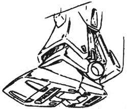
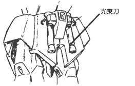
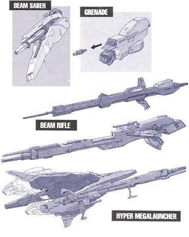
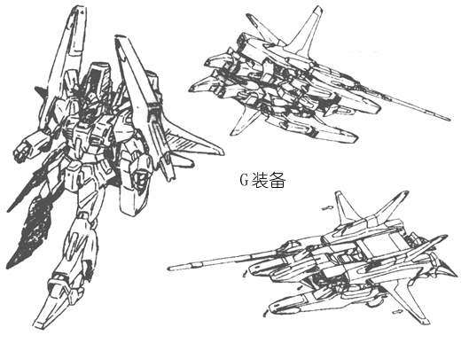
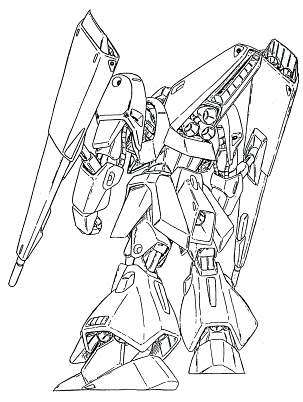
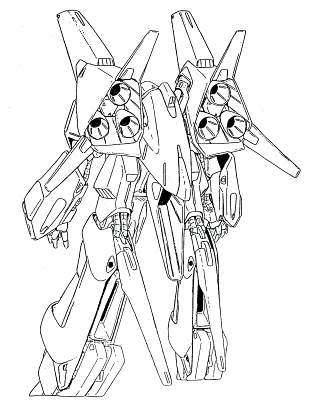
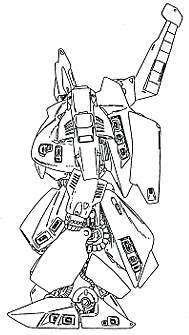
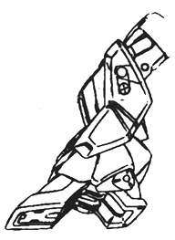
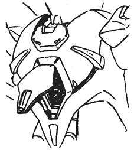
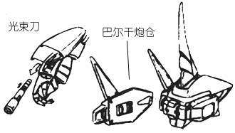

奥古篇：
MSA-003 雷姆
简介
本机是RGM-79R 吉姆Ⅱ的后继发展机，最初的设计制造是由阿纳海姆电子公司完成的，其后就作为奥古的次世代主力量产型机体被大量投入到了格利普斯战争的战场上。武器方面沿用了已有机型的装备——光束步枪选自RGM-79R，光束军刀选自RMS-099 利克·迪亚斯，助推器的功率及装甲材料（高达尼姆合金）等基本性能比前两种更为优秀。本机作为代替“吉姆”系MS的常规兵器，适用性强，平衡性好，易批量生产，得到很高的评价。
概要
机体番号： MSA-003
机体代号(日文)： ネモ 英文： Nemo 中文： 雷姆
出现作品： 机动战士Z GUNDAM
机体类型： 迎击用量产型MS
制造商： 阿纳海姆电子公司
所属： 奥古
初次配备：
技术参数
内部环境： 标准式全视野监控
尺寸： 头顶高：18.5米
全高：19.5米
重量： 本体重量：36.2吨
全备重量：55.6吨
比重：1.32
装甲材料及结构： 高达尼姆合金（gundarium alloy）
发电机出力： 1620KW
推进力： 72800KG
姿势制御喷嘴数：12
加速度： 1.15G
装备及设计特征： 传感器探测有效半径：10020米
固定武装： 头部60mm火神炮×2；光束军刀×2，额定输出功率0.4MW
选用武装： 专用盾牌
选用手部武器： 光束步枪，额定输出功率1.9MW
远程武器：



MSA-005 梅塔斯
简介
本机是“Z计划”中试制的可变式MS之一。机体的形状还是计划初期时的样式，它其实是为了检 验变形机构而特意试作的，但也是奥古的第一台可变MS。变为 MA形态时，成为一架宇航战斗机，武装只有两门前臂光束枪，攻击力虽尚可，但种类实在太少了，变形机构的完成使本机具有很强的运动性和加速性，这点十分受 前线士兵的欢迎。光束军刀和光束枪的规格都自成系统，性能和泛用性都不够完备。不过，各部件易生产，机体损伤时，修复也很简便。本机型配置在亚加玛的机体 最初为蕾柯亚·朗德少尉驾驶，后由花园丽军曹担任驾驶员。
概要
机体番号： MSA-005
机体代号(日文)： メタス 英文： Methuss 中文： 梅塔斯
出现作品： 机动战士Z GUNDAM
机体类型： 攻击用试作型可变MS
制造商： 阿纳海姆电子公司
所属： 奥古
初次配备： U.C.0087
技术参数
内部环境： 标准式全视野监控
尺寸： MS模式下头顶高：18.1米，全高：26.0米
MA模式下全长：21.8米，全高：6.2米
重量： 本体重量：27.8吨
全备重量：52.4吨
比重：1.45
装甲材料及结构： 高达尼姆合金（gundarium alloy）可变式框架
发电机出力： 1640KW
推进力： 3×18600KG+2×10600KG=77000KG
姿势制御喷嘴数：12
加速度： 1.47G
装备及设计特征： 传感器探测有效半径：11300米
固定武装： 前臂光束枪×2，额定输出功率2.0MW；光束军刀×6，额定输出功率0.5MW
选用武装：
选用手部武器：
远程武器：
MSA-099 利克·迪亚斯
简介
本机是阿纳海姆为奥古秘密开发的史上最早的次世代MS，分类为攻击用量产机，也是第一台使用了“高达尼姆γ（伽玛）合金”作为装甲材料的量产型MS，从而成功地大幅降低了机体的重量，增加了推进剂的装载量，使作战半径更为延长。而这项合金的提炼技术是由夏亚、也就是“Z”系列里的柯特罗·巴吉纳上尉，卖给奥古的。由于使用了“高达尼姆γ合金”，开发人员都称之为“Gamma Gundam(伽玛高达)”。由于该机的开发者是以原吉恩公国的技术人员为中心组成的，所以该机有着MS-09型的影子。基于新型的喷射推进器，使本机的运动性及灵活性大幅提升，更为日后开发MSN-00100 百式而铺路。此机还配备了比联邦军MS更先进的探测器，在米诺夫斯基粒子散布的情况下，能比同期MS探测到更远的敌人（上下100度、左右200度）。本机的正式番号为MSA-099（有些资料上记载为MSA-009），但为了欺瞒联邦军，奥古将本机的番号改成联邦式的番号——RMS-099，因此本机是双番号机体。本机最初的名称是γ高达，后因柯特罗上尉的提议而以发现好望角的葡萄牙人巴索罗缪·迪亚斯的姓氏命名为利克·迪亚斯。作为量产机，本机的造价非常高，因此只配给了士官以上的机师使用。机型最初的涂装为黑色，唯有柯特罗上尉驾驶的机体为红色；后来都统一涂成红色，其中多少可以反映出奥古战略政策的转变。
概要
机体番号： MSA-099
机体代号(日文)： リック·ディアス 英文： Rick Dias 中文： 利克·迪亚斯
出现作品： 机动战士Z GUNDAM
机体类型： 攻击用量产型MS
制造商： 阿纳海姆电子公司
所属： 奥古
初次配备：
技术参数
内部环境： 标准式全视野监控
尺寸： 头顶高：18.7米
全高：21.6米
重量： 本体重量：32.2吨
全备重量：54.7吨
比重：1.43
装甲材料及结构： 高达尼姆γ合金（gundarium γ alloy）
发电机出力： 1833KW
推进力： 2×37400KG=74800KG
姿势制御喷嘴数：7
加速度： 1.37G
装备及设计特征： 传感器探测有效半径：11500米；背部自由捆绑式推进剂槽×2
固定武装： 光束军刀×1，额定输出功率0.4MW；2连装55mm火神火焰炮×1
选用武装：
选用手部武器： 专用光束手枪×2，额定输出功率2.2MW；榴弹发射器
远程武器：
MSN-100 百式
简介
本机是“Z计划”中，作为Z高达的候补设计方案之一而试制出的金色的MS，开发时代号为“δ ガンダム”。原先打算替它安装上可变机构，但是遇到了技术上的困难，不得不放弃了将复杂的变形机构搭载于本机上的计划。但是即使不能变形，本机的基本性能 也保持在很高的水平，所以将它重新设计成了非变形机体。百式的开发参考了“MSA-099 力克·迪亚斯”、“RX-178 高达MK-Ⅱ”、“MSA-003 雷姆”的实战运行数据，采用了可变式框架、背部吸附翼，运动性堪称最高水准。其武器与MSA-003等机型通用，有头部60mm火神炮、光束步枪、光束军 刀，以及原先专为Z高达试制的超级MEGA粒子炮。其初代驾驶员为奥古的柯特罗上尉，也就是改名换姓后的“赤色彗星”——夏亚·阿兹纳布。格利普斯战争期 间泰坦斯的驾驶员闻“金色MS”而丧胆。
本机原番号为MSN-001，后来开发者M·NAGANO博士（永野护是也……）提议改为 MSN-100（亦为MSN-00100），“百式”这个名字也是希望它成为100年后也能战斗的MS，但在格利普斯最终决战中本机被哈曼·卡恩所驾驶的 AMX-004 卡碧尼击破，后被奥古回收后修复，于第一次新吉恩战争中继续登场。
概要
机体番号： MSN-100
机体代号(日文)： 百式 英文： Hyaku Shiki 中文： 百式
出现作品： 机动战士Z GUNDAM
机体类型： 攻击用试作型MS
制造商： 阿纳海姆电子公司
所属： 奥古
初次配备： U.C.0087
技术参数
内部环境： 标准式全视野监控
尺寸： 头顶高：18.5米
天线高：19.2米
全高：21.4米
重量： 本体重量：31.5吨
全备重量：54.5吨
比重：1.44
装甲材料及结构： 高达尼姆合金（gundarium alloy）可变式框架
发电机出力： 1850KW
推进力： 4×18700KG=74800KG
姿势制御喷嘴数：12
加速度： 1.37G
装备及设计特征： 传感器探测有效半径：11200米；抗光束反射装甲
固定武装： 头部60mm火神炮×2；光束军刀×2，额定输出功率0.4MW
选用武装：
选用手部武器： 专用光束步枪，额定输出功率2.7MW；榴弹发射器；超级MEGA粒子炮
远程武器：

MSZ-006 Z高达
简介
本机是奥古和阿纳海姆公司共同制定的“Z计划”所开发制造出来的、最终成为奥古象征的可变型MS，开发代号为“ζガンダム”。本机在开发时曾因可变式框架等的性能的问题而一度搁浅，后来奥古得到了泰坦斯的RX-178 高达MkⅡ，参考了RX-178的可变式框架及卡缪·比丹的设计试案之后，改变了原先的设计方案，最终开发成功。
本机具有单机突入大气层的能力，潜在能力超过当时的任何MS。装备有光束军刀、光束步枪、2连装导弹发射器等多种式样的武器，单体MS的攻击力首屈一指，而且能使用大功率高能MEGA粒子炮。“MSZ-006 Z高达”的变型机构的主要部件是背部飞行装甲，在上面装备有长尾燃烧器式自稳器，提高了逆向动作时的安定性。即使变成MS形态，也具有很优良的运动性能。后来又在机体上搭载了仿生测控系统，将机体的追踪能力提高到了一个新的水平。“MSZ-006”在突入大气圈时的MA形态之所以被称做 “WAVERIDER（冲浪者）”，是因为在飞行时机体下方形成了一种被压缩的冲击波，而机体就是依靠这种被压缩的冲击波而产生出升力的。由MS形态开始变型，瞬间就能完成。MS形态时使用的武器，在变成MA后，绝大部分不需改变样式就能使用。此外，由于喷嘴是可动式的，故比其他可变MS/MA的机动性更高，不仅在突入大气圈时性能优良，就是作为航空/航宇战斗机，其性能也颇为满意。
奥古的王牌机师卡缪·比丹驾驶本机在格利普斯战争中立下了赫赫战功，而且在最终决战中击破了泰坦斯由帕普迪马斯·西罗克上尉驾驶的PMX-003 The·O，为格利普斯战争打下了终止符。
概要
机体番号： MSZ-006
机体代号(日文)： Ｚガンダム 英文： Zeta Gundam 中文： Z高达
出现作品： 机动战士Z GUNDAM
机体类型： 攻击用试作型可变MS
制造商： 阿纳海姆电子公司
所属： 奥古
初次配备： U.C.0087
技术参数
内部环境： 标准式全视野监控
尺寸： MS模式下头顶高：18.7米，全高：19.85米
MA模式下全长：24.32米，翼展：18.61米
重量： 本体重量：28.7吨
全备重量：62.3吨
比重：1.70
装甲材料及结构： 高达尼姆合金（gundarium alloy）可变式框架
发电机出力： 2020KW
推进力： 5×12200KG+2×10600KG+4×7600KG=112600KG
姿势制御喷嘴数：8
加速度： 1.81G
装备及设计特征： 传感器探测有效半径：14000米；搭载生物传感系统
固定武装： 头部60mm火神炮×2；腕部2连装榴弹发射器×2；光束军刀×2，额定输出功率0.6MW
选用武装： 专用盾牌
选用手部武器： 光束步枪×1，额定输出功率5.7MW；高能MEGA粒子炮，额定输出功率8.3MW
远程武器：


RX-178 高达Mk-Ⅱ
简介
本机是泰坦斯作为次期专用主力战力而在格利普斯1号独立秘密开发的MS。其原型机是一年战争期间著名的“RX-78 GUNDAM”，新型机具有很高的潜力。“RX-178 GUNDAM Mk-Ⅱ”第一次采用了真正的可变式框架，显示出极为灵活的运动性能。机型虽属通用型，但因设计开发为泰坦斯专用机，设计时重点考虑了在殖民卫星内部的实战情况，所以本机的发动机、喷射器性能颇高，与当时的MS相比，在大气层能或其他有重力的空间中，仍能发挥良好的机动性。另一方面，由于装甲材料使用的是旧式材料（钛合金+陶瓷复合装甲），所以防御力并不是太高，这是该机的一个缺点。试作机造到3号机就停产了，奥古通过幕后活动，最终将3台机体全部夺到了手，并将其中一台解体成零部件使用（参看下面的图）。那时，已经将机体的颜色由原来的泰坦斯标志色——黑色，改为了白色。Mk-Ⅱ的大气圈突入用飞行装甲，是阿纳海姆公司作为Z高达开发计划（Z计划）的一环，而开发出来的大气圈突入系统的试作品。飞行装甲与Mk-Ⅱ组装成一体突入大气层时，与以往的系统相比能发挥出更强的战斗力，在地球上还可以作为副飞行器使用。
若论单机性能，Gundam Mark-Ⅱ可能不及泰坦斯的可变式 MS，但直至格利普斯战役结束为止，仍不断地被投入到最前线。Mk-Ⅱ的驾驶员最初是卡缪，在他搭乘了Z高达之后，Mk-Ⅱ转交给了奥古冷静、清高的美女 ——爱玛·辛中尉驾驶，直到她在格利普斯战役中牺牲为止。
概要
机体番号： RX-178
机体代号(日文)： ガンダムMk-Ⅱ 英文： Gundam Mark-Ⅱ 中文： 高达Mk-Ⅱ
出现作品： 机动战士Z GUNDAM
机体类型： 泛用多目的型试作MS
制造商： 泰坦斯
所属： 奥古
初次配备： U.C.0087
技术参数
内部环境： 标准式全视野监控
尺寸： 头顶高：18.5米
全高：19.6米
重量： 本体重量：33.4吨
全备重量：54.1吨
比重：1.44
装甲材料及结构： 钛合金（钛/陶瓷复合材料） （titanium alloy/ceramic composite）可变式框架
发电机出力： 1930KW
推进力： 4×20300KG=81200KG
姿势制御喷嘴数：10
加速度： 1.50G
装备及设计特征： 传感器探测有效半径：11300米
固定武装： 光束军刀×2，额定输出功率0.45MW
选用武装： 头部60mm火神荚舱系统；专用盾牌
选用手部武器： 专用光束步枪×1，额定输出功率2.6MW；360mm超级火箭筒
远程武器：
RX-178+FXA-05D 超级高达
简介
“RX-178 GUNDAM Mk-Ⅱ”虽属高性能机体，但装甲材料陈旧，并有一些微小缺陷。为此，为了加强其火力及装甲，延长续航时间，开发出了新机型——“FXA-05D G战机”，G战机的设计前提是与Mk-Ⅱ合并使用的。不过单独作为宇宙战斗机，性能也十分优秀。与Mk-Ⅱ合并成超级高达后，若作为MS使用，操纵舱便会分离，成为小型宇宙战斗机“核心战斗机”，独立飞行。Mk-Ⅱ与G战机的合并机体通称为超级高达，而装载Mk-Ⅱ时的航行形态称为“G装备”。合并后Mk -Ⅱ就能使用14连装的导弹发射器和大功率高能光束步枪，大幅度增强了火力。G装备也充分显示了装甲坚固、助推器推力大等优势。“FXA-05D G战机”由小林隼人的养子卡兹驾驶。在格利普斯战争后期的战斗中，本机在被RX-139 汉布拉比的攻击中屡次暴露出耐电性不强的弱点，因此后来便对机体的耐电性进行了强化。
概要
机体番号： RX-178+FXA-05D
机体代号(日文)： スーパーガンダム 英文： Super Gundam 中文： 超级高达
出现作品： 机动战士Z GUNDAM
机体类型： 追加武装装备泛用试作型MS
制造商： 泰坦斯、阿纳海姆
所属： 奥古
初次配备： U.C.0087
技术参数
内部环境： 标准式全视野监控
尺寸： 头顶高：18.5米
重量： 本体重量：33.4吨
全备重量：94吨
装甲材料及结构： RX-178为钛合金/陶瓷复合装甲（titanium alloy/ceramic composite）可变式框架；FXA-05D为高达尼姆合金（gundarium alloy）
发电机出力：
推进力： 4×20300KG+2×42400KG=166000KG
加速度： 1.77G
装备及设计特征： 传感器有效探测半径：11300米
固定武装： 光束军刀×2，额定输出功率0.45MW；14连装导弹发射器
选用武装： 头部60mm火神荚舱系统
选用手部武器： 专用光束步枪×1，额定输出功率2.6MW；360mm超级火箭筒
远程武器： 长距离光束步枪，额定输出功率6.8MW


MSK-008 迪杰
简介
本机是由奥古提供技术、由地球上的反联邦组织卡拉巴以陆战用RMS-099 利克·迪亚斯为原型机进行再设计所开发的大气圈内用试作型MS。和利克·迪亚斯的情况一样，本机开发者多为旧吉恩系的技术人员，所以本机的外貌也带有浓郁的吉恩系MS的色彩。本机的装甲是完全新设计的，关节部分也经过了强化处理。另外为了解决散热问题，还特地在背部装了大型散热扇。可能是由于在地球上开发出来的原因，本机在大气圈内的机动性高人一筹。武器有：头部火神炮、光束长矛和光束枪（其光束枪等武器沿用了利克·迪亚斯和百式的型号，这是因为卡拉巴的技术和资金都很匮乏，所以设计时尽量以能与奥古机体进行连携为目标）。本机由阿姆罗·雷驾驶，参与了乞力马扎罗突袭战等战斗。
概要
机体番号： MSK-008
机体代号(日文)： ディジェ 英文： Dijeh 中文： 迪杰
出现作品： 机动战士Z GUNDAM
机体类型： 攻击用试作型可变MS
制造商： 卡拉巴
所属： 卡拉巴
初次配备： U.C.0087
技术参数
内部环境： 标准式全视野监控
尺寸： 全高：23.0米
头顶高：18.4米
重量： 本体重量：33.9吨
全备重量：51.8吨
比重：1.30
装甲材料及结构： 高达尼姆合金（gundarium alloy）
发电机出力： 1892KW
推进力： 火箭式推进器：2×28000KG+1×18000KG=74000KG
喷气式推进器：2×7900KG=15800KG
姿势制御喷嘴数：6
加速度： 1.43G
装备及设计特征： 传感器探测有效半径：11700米
固定武装： 头部火神炮×2；光束长矛×1
选用武装：
选用手部武器： 专用光束步枪，额定输出功率2.8MW；榴弹火箭炮
远程武器：
泰坦斯篇：
MRX-009 精神感应高达
简介
本机是日本村雨研究所开发的大型可变MA，即有名的精神感应高达。虽说本机的形状、名称都继 承了RX-78-2 高达，但实际的系统却是继承自MSN-02 吉恩号。本机是联邦军第一架真正的NEW TYPE专用机（虽说驾驶员是强化人——凤·村雨），火器管制及机体控制都导入了仿心理系统。这是一台重量超过200吨的超大型机体，但其在MA形态时， 因为使用了米诺夫斯基飞行器，所以能够在地球上空作长时间飞行。武器方面有：头部装备的2连装MEGA粒子炮，胸部装备的3连装大型扩散式高能MEGA粒 子炮，两手手指内安装的10门高能MEGA粒子炮，总计15门光束炮，而且机体内还装备了多种强力火器。安装这么多重武器的目的是因为作战目的不仅限于与 MS作一对一的战斗，更主要的是需要大范围地歼灭敌人。由于采用了I FIELD及重装甲，所以一般的武器很难对本机造成伤害。
拥有压倒性攻击力与防御力的本机，却由于作为驾驶员的强化人精神不安定而无法发挥其应有的实 力，不能不说是件相当遗憾的事情。记录上本机共制造了两架，均由凤 ·村雨少尉驾驶，一架参加了香港市的对奥古、卡拉巴的战斗；另一架则在卡拉巴进行乞力马扎罗攻略战时出现过，为了保护奥古的卡缪·比丹而被捷利特击坠，凤 少尉死亡。
概要
机体番号： MRX-009
机体代号(日文)： サイコガンダム 英文： Psyco Gundam 中文： 精神感应高达
出现作品： 机动战士Z GUNDAM
机体类型： NT专用试作型可变MA
制造商： 村雨研究所
所属： 泰坦斯
初次配备： U.C.0087
技术参数
内部环境： 标准式全视野监控
尺寸： MS模式下：头顶高40.0米，全高41.0米
MA模式下：全高30.2米，翼展32.4米
重量： 本体重量：214.1吨
全备重量：388.6吨
装甲材料及结构： 高达尼姆合金（gundarium alloy）可变式框架
发电机出力： 33600KW
推进力： 84000KG（MS模式下）
500000KG（MA模式下）
姿势制御喷嘴数：6
加速度： 0.43G（MS模式下）
1.72G（MA模式下）
装备及设计特征： 传感器探测有效半径：10200米；搭载塞可缪系统；抗光束反射装甲
固定武装： 胸部3连装扩散MEGA粒子炮×1，额定输出功率4.8MW；指部光束炮×10，额定输出功率2.0MW；头部2连装小型MEGA光束炮
选用武装： 专用盾牌
选用手部武器：
远程武器：
MRX-010 精神感应高达Mk-Ⅱ
简介
本机体是作为MRX-009 精神感应高达的发展型而开发的机体，由村雨研究所设计，而在宇宙建造。由于装备了塞可缪控制的智能化光束反射镜和有线制导光束剑，从而可以全方位发动立体攻击或者进行防御。此外，其全身装备了20门以上的高能MEGA粒子炮，单个机体中，它的火力属于最强的级别。格利普斯战役中，本机体遭到了破坏，最后被阿克西斯的新吉恩军回收并进行改良，在第一次新吉恩战争的达喀尔攻略战中被投入使用。
概要
机体番号： MRX-010
机体代号(日文)： サイコガンダムMk-Ⅱ 英文： Psyco Gundam Mark-Ⅱ 中文： 精神感应高达Mk-Ⅱ
出现作品： 机动战士Z GUNDAM
机体类型： NT专用试作型可变MA
制造商： 村雨研究所
所属： 泰坦斯
初次配备： U.C.0087
技术参数
内部环境： 标准式全视野监控
尺寸： MS模式下：头顶高39.98米，全高40.74米
MA模式下：全高33.53米，翼展31.78米
重量： 本体重量：187.8吨
全备重量：283.9吨
比重：1.37
装甲材料及结构： 高达尼姆合金（gundarium alloy）可变式框架
发电机出力： 19760KW
推进力： 4×37340KG+4×23720KG=244240KG（MS模式下）
320000KG（MA模式下）
姿势制御喷嘴数：4
加速度： 0.86G（MS模式下）
1.99G（MA模式下）
装备及设计特征： 传感器探测有效半径：16230米；塞可缪控制座椅；可独立分离式头部
固定武装： 胸部3连装扩散MEGA光束炮，合计额定输出功率32.1MW；头部2连装MEGA光束炮；指部光束炮×10；腕部有线制导光束剑×2，额定输出功率 1.7MW；肩部光束炮×6，额定输出功率6.3MW；腿部光束炮×8，额定输出功率6.3MW；髋甲光束炮×4，额定输出功率6.3MW；腰甲光束炮× 2，额定输出功率6.3MW
选用武装：
选用手部武器：
远程武器： 智能化光束反射镜×20

NRX-055-1 猎犬一号机
简介
NRX-055 猎犬是联邦军的奥格斯塔研究所开发的NT专用试作型可变MS，本机即是由基茨上尉驾驶的一号机。在奥格斯塔研究所内，对本机型的仿心理系统进行了调整。普通驾驶员虽然也可以操纵，但只有强化人或NT才能最大限度地发挥本机型的性能。本机型的MS/MA的形态都非常奇怪，外观很笨重，而实际上移动相当灵活。特别是MA形态的加速性和防御能力占压倒性优势，虽然是实验机，战斗力却不容小视。包括本机在内，NRX-055一共制造了3架，呈灰色涂装的本机是唯一设置了搭乘实验飞行员的副操纵席的NRX-055型机体，这个副操纵席是专门为奥格斯塔研究所的罗伦设置的，目的是为了监视及收集由罗莎米娅少尉驾驶的 NRX-055-2的战斗数据。
概要
机体番号： NRX-055-1
机体代号(日文)： バウンド·ドック（１号機） 英文： Bound Doc 中文： 猎犬一号机
出现作品： 机动战士Z GUNDAM
机体类型： NT专用试作型可变MS
制造商： 地球联邦军
所属： 泰坦斯
初次配备： U.C.0087
技术参数
内部环境： 全视野监控双座驾驶舱
尺寸： MS模式下：头顶高27.3米，全高29.7米
MA模式下：全长27.2米，全宽15.2米，飞行高13.0米，站立高19.3米
重量： 本体重量：82.7吨
全备重量：129.4吨
比重：1.33
装甲材料及结构： 高达尼姆合金（gundarium alloy）可变式框架
发电机出力： 2260KW
推进力： 3×48600KG=145800KG
姿势制御喷嘴数：4
加速度： 1.13G
装备及设计特征： 传感器探测有效半径：9840米；搭载塞可缪系统
固定武装： 光束军刀；专用扩散MEGA粒子炮，额定输出功率16.4MW；右腕机械爪；脚部机械爪×2
选用武装：
选用手部武器： 专用光束步枪，额定输出功率2.1MW
远程武器：
NRX-055-2 猎犬二号机
简介
NRX-055 猎犬是联邦军的奥格斯塔研究所开发的NT专用试作型可变MS，本机是由罗莎米娅少尉驾驶的二号机，呈红色涂装。由于本机是泰坦斯的NT专用型可变大型 MS，武器方面配备了高出力的光束步枪和扩散MEGA粒子炮，以及近身格斗战用的机械爪。本机型在MS形态时呈左右非对称的特异形状；MA形态时巨大的上半身收容到下半身的装甲内部，使得耐弹性和加速性非常良好。
概要
机体番号： NRX-055-2
机体代号(日文)： バウンド·ドック（２号機） 英文： Bound Doc 中文： 猎犬二号机
出现作品： 机动战士Z GUNDAM
机体类型： NT专用试作型可变MS
制造商： 地球联邦军
所属： 泰坦斯
初次配备： U.C.0087
技术参数
内部环境： 标准式全视野监控
尺寸： MS模式下：头顶高27.3米，全高29.7米
MA模式下：全长27.2米，全宽15.2米，飞行高13.0米，站立高19.3米
重量： 本体重量：82.7吨
全备重量：129.4吨
比重：1.33
装甲材料及结构： 高达尼姆合金（gundarium alloy）可变式框架
发电机出力： 2260KW
推进力： 3×48600KG=145800KG
姿势制御喷嘴数：4
加速度： 1.13G
装备及设计特征： 传感器探测有效半径：9840米；搭载塞可缪系统
固定武装： 光束军刀；专用扩散MEGA粒子炮，额定输出功率16.4MW；右腕机械爪；脚部机械爪×2
选用武装：
选用手部武器： 专用光束步枪，额定输出功率2.1MW
远程武器：
NRX-055-3 猎犬三号机
简介
本机是泰坦斯的奥格斯塔研究所所开发的NT专用试作型可变MS——NRX-055 猎犬的三号机。由于搭载了大型发电机，使得扩散MEGA粒子炮和高出力光束步枪等武器的使用成为可能。格利普斯战争末期，由捷利特·梅萨中尉担任本机的驾驶员，机体的涂装偏黄色。
概要
机体番号： NRX-055-3
机体代号(日文)： バウンド·ドック（３号機） 英文： Bound Doc 中文： 猎犬三号机
出现作品： 机动战士Z GUNDAM
机体类型： NT专用试作型可变MS
制造商： 地球联邦军
所属： 泰坦斯
初次配备： U.C.0087
技术参数
内部环境： 标准式全视野监控
尺寸： MS模式下：头顶高27.3米，全高29.7米
MA模式下：全长27.2米，全宽15.2米，飞行高13.0米，站立高19.3米
重量： 本体重量：82.7吨
全备重量：129.4吨
比重：1.33
装甲材料及结构： 高达尼姆合金（gundarium alloy）可变式框架
发电机出力： 2260KW
推进力： 3×48600KG=145800KG
姿势制御喷嘴数：4
加速度： 1.13G
装备及设计特征： 传感器探测有效半径：9840米；搭载塞可缪系统
固定武装： 光束军刀；专用扩散MEGA粒子炮，额定输出功率16.4MW；右腕机械爪；脚部机械爪×2
选用武装：
选用手部武器： 专用光束步枪，额定输出功率2.1MW
远程武器：
ORX-005 贾普兰
简介
本机是奥格斯塔研究所开发的可变式MA，并在研究所内进行了实验飞行。与其他可变式MA一样，本机以MA形态为主要战斗形态，MS形态主要用于格斗战中。原本本机是作为宇宙用机开发的，所以在宇宙中有着非常高的性能，机体本身也装备了在MA和MS形态下都能使用的专用主推进器，但是现在主要是作为大气圈内超高层迎击机使用的，在地球上空飞行时，推进剂的消耗量相当巨大，所以要使用副燃料箱辅助推进器来进行长距离的续航，性能也有一定的下降。MA形态时，所有的推进器都向后喷射，可以得到爆发加速度，另外由于采用了活动喷射嘴单元，不改变机首方向，就能急速变换飞行方向，机动性能极为优秀，但这时产生的加速G力，一般驾驶员是承受不住的，所以，实验飞行是由心肺机能经过强化的强化人（如罗莎米娅少尉）完成的。本机采用标准式全视野监控，机体下方由此就产生了死角，这不能不说是一个缺陷。
概要
机体番号： ORX-005
机体代号(日文)： ギャプラン 英文： Gaplant 中文： 卡普兰
出现作品： 机动战士Z GUNDAM
机体类型： 泛用试作型可变MA
制造商： 奥格斯塔研究所
所属： 泰坦斯
初次配备： U.C.0087
技术参数
内部环境： 标准式全视野监控
尺寸： MS模式下：头顶高19.8米，全高25.2米
MA模式下：全长20.3米，追加助推器后全长31.6米
重量： 本体重量：50.7吨
全备重量：94.2吨（MS模式下）94.7吨（MA模式下）274.2吨（MA模式追加助推器）
比重：1.63（MA模式下追加助推器后为3.53）
装甲材料及结构： 高达尼姆合金（gundarium alloy）可变式框架
发电机出力： 3040KW
推进力： 1×22000KG+7×12000KG+7×11000KG=183000KG
MA模式下追加助推器为：1×19000KG+2×12000KG+2×8800KG=60600KG
姿势制御喷嘴数：18
加速度： 1.94G（MA模式下追加助推器为0.29G）
装备及设计特征： 传感器探测有效半径：13000米
MA模式下可选装助推器，以追加提供能量、扩大战斗范围
固定武装： 光束军刀×2，额定输出功率0.6MW；腕部MEGA粒子炮×2
选用武装：
选用手部武器：
远程武器：

PMX-000 梅萨拉
简介
帕普迪马斯·西罗克是巨型木星资源运输船朱庇特利斯号的指挥官。他指挥部下在运输船内手工建造了这架可变形MA。为了摆脱木星的强大重力，该机特别对发动机进行了强化，还搭载了大推力助推器。该机变形成MA形态时具有极为优秀的性能，装备有2门高能粒子炮及导弹舱，火力可与战舰相媲美；变形成MS形态时，机体高度超过30米，是一种超大型机械，装备有大型光束刀，榴弹发射器等武器，中、近距离内也能发挥出强大的战斗力，而且其白兵战的性能不输给Z高达，是一台相当出色的MA。本机只制造了1台。
概要
机体番号： PMX-000
机体代号(日文)： メッサーラ 英文： Messala 中文： 梅萨拉
出现作品： 机动战士Z GUNDAM
机体类型： 泛用试作型可变MA
制造商： 地球联邦军
所属： 泰坦斯
初次配备： U.C.0087
技术参数
内部环境： 标准式全视野监控
尺寸： MS模式下：头顶高18.6米，全高23.1米
重量： 本体重量：37.3吨
全备重量：89.1吨
比重：1.97
装甲材料及结构： 高达尼姆合金（gundarium alloy）
发电机出力： 4900KW
推进力： 6×16000KG=96000KG
姿势制御喷嘴数：8
加速度： 1.08G
装备及设计特征： 传感器探测有效半径：11300米
固定武装： 光束军刀×2，额定输出功率0.5MW；脚部格斗用爪×2；腕部榴弹发射器；肩部MEGA粒子炮×2；背部9连装导弹舱×2；腕部火神炮等
选用武装：
选用手部武器：
远程武器：

PMX-001 帕拉斯·雅典娜
简介
本机是继PMX-000 梅萨拉之后由帕普迪马斯·西罗克上尉在木星制造的第2台MS，与上一台梅萨拉不同，本机没有安装可变形机构，是纯粹重视攻击力的重型MS。机体上装备有数门光束炮（全装备状态下达到8门之多），脚部有机械爪。选装部件有对舰用大型导弹、2连装光束步枪、吸附导弹等，可装备的武器是标准MS的数倍，火力可以匹敌战舰或者大型MA，与其名称——来源于古希腊神话里从主神宙斯（朱庇特）脑中全副武装诞生而出的女战神帕拉斯·雅典娜——可以说是名副其实。但是，由于发动机出力不足的缘故，其机动性未达标准，而庞大的机体又限制了运动的灵活性。在格利普斯战争期间，此机击坠了由爱玛·辛中尉驾驶的RX-178 高达Mk-Ⅱ。
概要
机体番号： PMX-001
机体代号(日文)： パラス·アテネ 英文： Pallas Athene 中文： 帕拉斯·雅典娜
出现作品： 机动战士Z GUNDAM
机体类型： 泛用试作型重MS
制造商： 地球联邦军
所属： 泰坦斯
初次配备： U.C.0087
技术参数
内部环境： 标准式全视野监控
尺寸： 头顶高：21.6米
全高：27.4米
重量： 本体重量：65.0吨
全备重量：80.0吨（标准装备）；91.5吨（全装备）
比重：1.40（标准装备）
装甲材料及结构： 高达尼姆合金（gundarium alloy）
发电机出力： 1790KW
推进力： 1×38500KG+2×29500KG=97500KG
姿势制御喷嘴数：15
加速度： 1.22G（标准装备）
1.07G（全装备）
装备及设计特征： 传感器探测有效半径：10100米
固定武装： 腕部MEGA粒子炮×2；肩部2连装扩散光束炮；榴弹发射器；光束军刀；脚部格斗用爪×2；移动式盾牌等
选用武装： 背部4连装对舰用大型导弹×2（盾牌内藏）
选用手部武器： 2连装MEGA光束枪；盾装导弹×40（8×5）
远程武器：

PMX-003 铁奥
简介
本机是帕普迪马斯·西罗克在朱庇特利斯号上制造的重型MS，并由西罗克亲自担任驾驶员。其设计思想完全是为了实验，构造中存在四重、五重关节，裙甲内装备有近战用暗藏臂，许多部分与其他MS不相同。作为智能系统的一种，本机还装备了生物电脑。本机全身装有50台姿势制御用喷嘴，所以虽然身躯庞大，却非常灵活，机动性能优良。武器有光束枪、光束刀，种类并不多，但由于有大功率发动机提供能量，装甲又非常之厚，所以战斗力非常强大，不亚于MSZ-006 Z高达。
概要
机体番号： PMX-003
机体代号(日文)： ジ·O 英文： The·O 中文： 铁奥
出现作品： 机动战士Z GUNDAM
机体类型： 局地战用试作型重MS
制造商： 地球联邦军
所属： 泰坦斯
初次配备： U.C.0087
技术参数
内部环境： 标准式全视野监控
尺寸： 头顶高：24.8米
全高：28.4米
重量： 本体重量：57.3吨
全备重量：86.3吨
比重：1.36
装甲材料及结构： 高达尼姆合金（gundarium alloy）
发电机出力： 1840KW
推进力： 1×38200KG+6×16200KG=135400KG
姿势制御喷嘴数：50
加速度： 1.57G
装备及设计特征： 传感器探测有效半径：11300米；裙甲内装备有近战用暗藏臂；还装有生物传感电脑
固定武装： 光束军刀×2；光束剑×2；隐藏机械臂
选用武装：
选用手部武器： 专用光束步枪，额定输出功率2.6MW；双重光束枪
远程武器：

RGM-179 吉姆Ⅱ
简介
一年战争期间，联邦军批量生产了RGM-79 吉姆。战后，又对该机体进行了改良，作为后继机种，批量生产出了RGM-179 吉姆Ⅱ。其基本设计与前身完全相同。新机型略微提高了发动机的功率及助推器的推进力，操纵室内导入了线性座椅，改良了控测器，强化了装甲。但因是以旧机型为基础为普通驾驶员设计的机体，改进受到限制，又因大批量生产，所以基本性能并未提高多少。本机亦是双番号机体：在格利普斯制造的机体番号为RGM- 179；在地面上生产的机体番号是RGM-79R。格利普斯战争时期部分机体亦流入奥古手中，为了便于识别，涂装由红色改为绿色。
概要
机体番号： RGM-179
机体代号(日文)： ジムⅡ 英文： GM Ⅱ 中文： 吉姆Ⅱ
出现作品： 机动战士Z GUNDAM
机体类型： 泛用量产型MS
制造商： 地球联邦军
所属： 泰坦斯
初次配备：
技术参数
内部环境： 标准式全视野监控
尺寸： 头顶高：18.1米
全高：19.1米
重量： 本体重量：40.5吨
全备重量：58.7吨
比重：1.29
装甲材料及结构： 钛合金（钛/陶瓷复合材料）
发电机出力： 1518KW
推进力： 4×15500KG=62000KG
姿势制御喷嘴数：10
加速度： 1.06G
装备及设计特征： 传感器有效探测半径：8800米
固定武装： 头部60mm火神炮×2；光束军刀×1，额定输出功率2.6MW
选用武装： 专用盾牌
选用手部武器： 专用光束步枪，额定输出功率1.9MW
远程武器：
RMS-106CS 狙击型高扎古
简介
本机是RMS-106 高扎古的改进型。主要的改进是对发电机进行了改良，使机体可以同时装备光束武器。本机装备有狙击用大型光束步枪，能够发射长距离光束；另外本机装备了光学探测器，可以保证机体进行安定的狙击。除了武器，还追加了大型盾，增强了防御力，装甲材料进行了改良，还换装了大型后备箱，使其比普通高扎古更加灵活机动，堪与次世代的机体比肩。由于生产性问题，RMS-106CS配备给军队的数量极少（配给了泰坦斯），所以被军内人士称为“影子高扎古”。
概要
机体番号： RMS-106CS
机体代号(日文)： ハイザック·カスタム 英文： Hi-Zack Custom 中文： 狙击型高扎古
出现作品： 机动战士Z GUNDAM
机体类型： 狙击用试作型MS
制造商： 地球联邦军
所属： 泰坦斯
初次配备：
技术参数
内部环境： 标准式全视野监控
尺寸： 头顶高：18.0米
全高：19.9米
重量： 本体重量：35.6吨
全备重量：60.7吨
装甲材料及结构： 钛合金（钛/陶瓷复合材料）
一部分为高达尼姆合金
发电机出力： 1480KW
推进力： 4×18500=74000KG
姿势制御喷嘴数：10
加速度： 1.22G
装备及设计特征： 传感器探测有效半径：8900米
固定武装： 光束军刀
选用武装： 专用扎古盾牌
选用手部武器： 狙击用大型光束步枪
远程武器：
RMS-108 玛拉塞
简介
本机是阿纳海姆公司为泰坦斯开发的泰坦斯最初的次世代MS（本来是预定为奥古开发的），按设计要求，可以说是RMS-106 高扎古的发展型，两机型通用一部分武器。装甲使用了“高达尼姆γ合金”，且由于使用了新型的发动机，提高了机体的出力，使本机能够使用数件光束兵器，比高扎古的性能提高了一个等级。该机综合性能优良、适用性强，与其他各机种相比，易生产、易操纵，获得了广泛的好评，多次投入到了实战中。
概要
机体番号： RMS-108
机体代号(日文)： マラサイ 英文： Marasai 中文： 玛拉塞
出现作品： 机动战士Z GUNDAM
机体类型： 泛用量产型MS
制造商： 阿纳海姆电子公司
所属： 泰坦斯
初次配备： U.C.0087
技术参数
内部环境： 标准式全视野监控
尺寸： 头顶高：17.5米
全高：20.5米
重量： 本体重量：33.1吨
全备重量：59.4吨
比重：1.48
装甲材料及结构： 高达尼姆合金（gundarium alloy）
发电机出力： 1790KW
推进力： 2×19300KG+3×12000KG=74600KG
姿势制御喷嘴数：8
加速度： 1.26G
装备及设计特征： 传感器探测有效半径：10900米
固定武装： 头部火神炮×2；光束军刀×2，额定输出功率0.4MW
选用武装： 专用盾牌
选用手部武器： 专用光束步枪，额定输出功率2.2MW
远程武器：
RMS-154 巴扎姆
简介
本机是联邦军所开发的次世代主力量产型MS，用以替代吉姆等机型。设计时参考了RX-178 高达MK-Ⅱ等机体，因此基本性能优良、便于生产、较旧机型更容易操纵，增设的助推器使机体获得了较高的运动性，作为泛用量产型MS而言本机有着非常高的性能。为了便于机体之间的连携及维护，本机与RMS-108 玛拉塞、RMS-106 高扎古等机体可进行部分武装的互换。与旧型的可变MS、MA相比，本机虽然具有高性能的优点，但制造成本、适用性等方面仍存在一定问题，没有特别突出的优势，因而最终没有投入大批量生产。在配置到部队时，泰坦斯已掌握了军权，因此本机多配置于泰坦斯的部队，在格利普斯战争末期成为泰坦斯的主力MS之一。
概要
机体番号： RMS-154
机体代号(日文)： バーザム 英文： Barzam 中文： 巴扎姆
出现作品： 机动战士Z GUNDAM
机体类型： 泛用量产型MS
制造商： 地球联邦军
所属： 泰坦斯
初次配备： U.C.0087
技术参数
内部环境： 标准式全视野监控
尺寸： 头顶高：19.4米
全高：24.2米
重量： 本体重量：40.4吨
全备重量：62.2吨
比重：1.35
装甲材料及结构： 高达尼姆合金（gundarium alloy）可变式框架
发电机出力： 1670KW
推进力： 2×40200KG=80400KG
加速度： 1.29G
姿势制御喷嘴数：14
装备及设计特征： 传感器探测有效半径：9870米
固定武装： 光束军刀×2
选用武装： 头部火神荚舱系统
选用手部武器： 专用光束步枪
远程武器：


RX-110 卡普斯利
简介
本机是由帕普迪马斯·西罗克上尉所设计的泰坦斯最初的可变型MS。MS、MA两种形态分别对应不同的战斗形态，武器方面也相应各自独立。大型长管光束步枪可作光束军刀用，实用性很强；机体的两种形态保证了背部的MEGA粒子炮有充分的发射角度；脚部的机械格斗爪是在MA形态时使用的，但在MS形态时用来 “踢”敌机也能取得很好的效果，具有很强的近战格斗能力。由于采用了自由度很高的可变式框架，所以本机在变形时还有个保留MS形态的上半身、而脚部的机械格斗爪已完全露出的中间形态。形态为MA时，全部的助推器都集中在机体后方，极大地提高了移动力及机动性。但是由于变形机构过于复杂，本机最终并没有投入批量生产，只向前线投放了几台试作机，其中有两台配给了西罗克指挥的战舰“多哥斯·基亚”，由捷利特中尉和玛雅少尉搭乘，在与奥古作战时被击坠。
概要
机体番号： RX-110
机体代号(日文)： ガブスレイ 英文： Gabthley 中文： 卡普斯利
出现作品： 机动战士Z GUNDAM
机体类型： 可变试作型MS
制造商： 地球联邦军
所属： 泰坦斯
初次配备： U.C.0087
技术参数
内部环境： 标准式全视野监控
尺寸： MS模式下：头顶高18.5米，全高18.5米
MA模式下：全长26.5米，翼展19.2米
重量： 本体重量：36.2吨
全备重量：56.2吨
比重：1.42
装甲材料及结构： 高达尼姆合金（gundarium alloy）可变式框架
发电机出力： 1800KW
推进力： 2×12600KG=25200KG
20×12600KG=252000KG
姿势制御喷嘴数：16
加速度： 0.45G（MS模式下）
4.93G（MA模式下）
装备及设计特征： 传感器探测有效半径：10900米
固定武装： 光束军刀×4，额定输出功率0.55MW；肩部MEGA粒子炮×2，额定输出功率4.2MW；后头部火神炮；脚部机械格斗爪×2
选用武装：
选用手部武器： 大型长管光束步枪，额定输出功率6.6MW
远程武器：
RX-139 汉布拉比
简介
本机是联邦军开发的可变型MS，全身装有5个寻物探测器，因此无论是在MS形态还是在MA形态，都能轻松地探测到敌人的踪迹。机体各处都安装了自动稳定器，使整机具有极高的运动性能。变为MA形态时，机身缩短，惯性距离小，机动性得到了提高，达到了宇航战斗机的水平。武器装备有MA形态时使用的大型背负式光束枪，以及与RX-110 Gabthley同型的大型长管光束步枪。此外，特别要提起的是其的特殊武器——“海蛇”，海蛇是以部队为单位向目标发动电击攻击时使用的武器。由于采用独特的有机框架，汉布拉比即使变成MA形态，腕部仍具有很高的自由度，接近战性能优良。
概要
机体番号： RX-139
机体代号(日文)： ハンブラビ 英文： Hambrabi 中文： 汉布拉比
出现作品： 机动战士Z GUNDAM
机体类型： 试作型可变MS
制造商： 地球联邦军
所属： 泰坦斯
初次配备： U.C.0087
技术参数
内部环境： 标准式全视野监控
尺寸： MS模式下：全高19.9米
MA模式下：全长17.9米，翼展15.9米
重量： 本体重量：34.6吨
全备重量：56.9吨
比重：1.55
装甲材料及结构： 高达尼姆合金（gundarium alloy）可变式框架
发电机出力： 1540KW
推进力： 2×29900KG=59800KG
姿势制御喷嘴数：4
加速度： 1.05G
装备及设计特征： 传感器探测有效半径：10020米
固定武装： 光束军刀×2，额定输出功率0.5MW
选用武装：
选用手部武器： 大型背负式光束枪×2（MA形态时使用），额定输出功率2.6MW；海蛇；蜘蛛之巢；腕爪×2；大型长管光束步枪；尾刺等
远程武器：
RX-160 拜亚蓝
简介
本机是在联邦军的乞力马扎罗基地开发的MS。两肩及腰部及至全身，都装备着大推力的助推器。与其他MS相比，主机体内可装载大量的助推剂，因此作战半径也得以加大，而且不使用辅助装置，不变形，就能单独在大气圈内飞行。若换装助推器，空间战斗中能发挥出比普通MS更加优越的加速性能。但是，其武器只有光束刀和安装在机体内部的高能米加粒子炮，武器的种类极其贫乏，实战方面也存在诸多问题，所以没有批量生产。
概要
机体番号： RX-160
机体代号(日文)： バイアラン 英文： Byarlant 中文： 拜亚蓝
出现作品： 机动战士Z GUNDAM
机体类型： 局地战专用试作型MS
制造商： 地球联邦军
所属： 泰坦斯
初次配备： U.C.0087
技术参数
内部环境： 标准式全视野监控
尺寸： 头顶高：18.6米
全高：23.1米
重量： 本体重量：34.2吨
全备重量：54.7吨
比重：1.33
装甲材料及结构： 高达尼姆合金（gundarium alloy）可变式框架
发电机出力： 1760KW
推进力： 1×28000KG+2×18000KG+2×11200KG=86400KG
姿势制御喷嘴数：13
加速度： 1.58G
装备及设计特征： 传感器探测有效半径：9890米
固定武装： 光束军刀×2；掌部MEGA粒子炮×2，额定输出功率4.7MW
选用武装：
选用手部武器：
远程武器：
联邦篇：
NRX-044 亚希玛
简介
本机是联邦军最初开发的可在大气圈内使用的可变MS，也是第一台不使用副飞行系统等辅助装置，成功地在地球上空飞行的单机。由于可变部位采用了磁气覆膜技术，使得MS/MA两种状态变形所需时间甚短，可以在0.5秒之内完成变形，这样就满足了接近战和飞行、空战两方面的要求。本机的MA形态是一种独特的圆盘形，具有很强的耐久性和耐弹性，速度与运动性也达到了很高的水平。武器虽然只有大型光束步枪，大气圈内的战斗力却极强。
U.C.0085年，本机的先行型完成，测试时发挥了良好的性能，所以最终实现了量产，主要配备给了联邦军的各地面基地使用。由布兰少校所驾驶的本型机，给卡拉巴的奥特姆拉带来了很多的麻烦。
概要
机体番号： NRX-044
机体代号(日文)： アッシマー 英文： Asshimar 中文： 亚希玛
出现作品： 机动战士Z GUNDAM
机体类型： 泛用试作型可变MA
制造商： 地球联邦军
所属： 联邦
初次配备： U.C.0087
技术参数
内部环境： 标准式全视野监控
尺寸： MS模式下头顶高：19.3米，全高：23.1米
MA模式下全长：18.4米
重量： 本体重量：41.1吨
全备重量：63.8吨
比重：1.35
装甲材料及结构： 钛合金（钛/陶瓷复合材料）
发电机出力： 2010KW
推进力： 火箭式推进器：2×17300KG+2×16800KG=68200KG
火箭式引擎：26000KG（只在MA模式下使用）
姿势制御喷嘴数：10
加速度： 1.07G（MS模式下）
1.48G（MA模式下）
装备及设计特征： 传感器探测有效半径：10200米
固定武装：
选用武装：
选用手部武器： 专用大型光束步枪，额定输出功率2.6MW；光束军刀
远程武器：
RMS-106 高扎古
简介
本机是一年战争后，联邦军初次开发、生产的泛用量产型机体，设计的基本思想以旧吉恩军的MS-06 扎古为原型，因此，称之为新机型倒不如说是改进型。不过，由于开发了新型轻量大功率发动机，与扎古相比，成功地解决了加强装甲和大幅度减轻重量这一矛盾。重量减轻后又可以多装载推进剂，从而改善了燃烧器的性能，显著地提高了在宇宙空间内的机动性。本机的优点是易操纵、航程远；缺点是不能同时使用数件光束兵器。此外它也是第一台采用了线性座椅和360度全周天屏幕的MS,并成为后继MS的标准样式。本机主要配给了联邦军的地上部队，涂装为紫色；配给泰坦斯的在性能上没有区别，只是涂装上是泰坦斯的专用色；另外本机还有少量流入新吉恩。
概要
机体番号： RMS-106
机体代号(日文)： ハイザック 英文： Hi-Zack 中文： 高扎古
出现作品： 机动战士Z GUNDAM
机体类型： 泛用量产型MS
制造商： 地球联邦军
所属： 联邦
初次配备：
技术参数
内部环境： 标准式全视野监控
尺寸： 头顶高：18.0米
重量： 本体重量：38.7吨
全备重量：59.6吨
比重：1.33
装甲材料及结构： 钛合金（钛/陶瓷复合材料）
发电机出力： 1428KW
推进力： 4×16200KG=64800KG
姿势制御喷嘴数：10
加速度： 1.09G
装备及设计特征： 传感器探测有效半径：8900米
固定武装： 光束军刀
选用武装： 携带式3连装导弹荚舱×2；专用扎古盾牌
选用手部武器： 热能斧；专用光束步枪，额定输出功率2.2MW；120mm扎古机枪改
远程武器：
RMS-117 加里波第β
简介
一年战争结束后，联邦军从吉恩军那里得到了很多机体设计方案，有些被联邦军拿来进行改良后得到新的机体，本机即是其中之一。本机的原型机是MS-17 Galbaldy α，再设计时对机体实行了轻量化，所以新机体减轻了重量，提高了运动性和机动性。由于原设计用于局部战斗，所以运动性高于RMS-106 高扎古。这样带来的反面效果便是，消薄了装甲层造成了机体的防御力下降，装甲材料（钛合金）也落后于时代。本机主要配置给了驻扎在月神二号方面的联邦军。格利普斯战争时期，本机最出色的驾驶员，当属月神二号方面军的莱拉·米拉·莱拉上尉。
概要
机体番号： RMS-117
机体代号(日文)： ガルバディβ 英文： Galbaldy β 中文： 加里波第β
出现作品： 机动战士Z GUNDAM
机体类型： 局地战专用MS
制造商： 地球联邦军
所属： 联邦
初次配备：
技术参数
内部环境： 标准式全视野监控
尺寸： 头顶高：19.0米
全高：19.0米
重量：
本体重量：36.3吨
全备重量：56.9吨
比重：1.35
装甲材料及结构： 钛合金（钛/陶瓷复合材料）
发电机出力： 1507KW
推进力： 8×15800KG=126400KG
姿势制御喷嘴数：10
加速度： 1.11G
装备及设计特征： 传感器探测有效半径：9200米
固定武装： 光束军刀；信号发射器×2
选用武装： 专用盾牌（内藏导弹×2）
选用手部武器： 专用光束步枪
远程武器：

MRX-009 精神感应高达
本机是在“朱庇特利斯”制造的第3台MS，未装备可变形机构，具有标准的MS性能。白兵战用的武器很充分，接近战中可充分发挥威力。头部的雷达天线罩是个复合测控系统，腕部也装备着强力的测控器，具备全面的侦察、发现敌方目标的能力，即使在米诺夫斯基粒子散布的情况下仍能发挥出出色的侦察索敌能力；而且为了不影响传感器的探测效果，本机的助推器集中装备在机体的背部，机体本身也进行了带磁处理。本机助推器的推进力强大，超越普通MS的水准，所以应该是作为强攻侦察机开发的，所以仅仅制造了1台。
机体番号： PMX-002
机体代号(日文)：ボリノーク·サマーン 英文：Bolinoak Samaan 中文：波里诺克·萨曼
出现作品：机动战士Z GUNDAM
机体类型：泛用试作型MS
制造商：朱庇特利斯
所属：泰坦斯
初次配备： U.C.0087
内部环境：标准式全视野监控
尺寸：
全高：19.9米
头顶高：19.9米
重量：
本体重量：31.6吨
全备重量：56.2吨
比重：1.46
装甲材料及结构：
高达尼姆合金（gundarium alloy）
发电机出力： 1720KW
推进力： 3×20040KG=60120KG
姿势制御喷嘴数：18
加速度： 1.07G
装备及设计特征：
传感器探测有效半径：11040米，头部的雷达天线罩内装有复合测控系统，前臂腕部也装有强力的探测器
固定武装： 3连装炸裂弹Launcher×2
选用武装：
光束斧（光束军刀/光束炮两用）×2；专用盾牌（附螯钳）